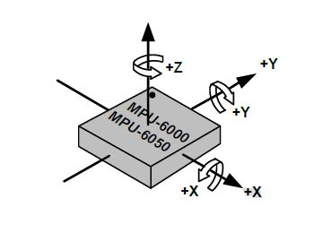
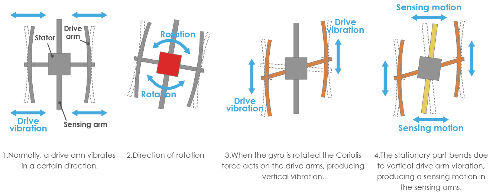

Nota
¡Hola! Bienvenidos a la comunidad de entusiastas de SunFounder para Raspberry Pi, Arduino y ESP32 en Facebook. Sumérgete en el mundo de Raspberry Pi, Arduino y ESP32 junto con otros apasionados.
¿Por qué unirse?
Soporte de Expertos: Soluciona problemas post-venta y desafíos técnicos con la ayuda de nuestra comunidad y equipo.
Aprende y Comparte: Intercambia consejos y tutoriales para mejorar tus habilidades.
Avances Exclusivos: Accede anticipadamente a anuncios de nuevos productos y adelantos.
Descuentos Especiales: Disfruta de descuentos exclusivos en nuestros productos más recientes.
Promociones y Sorteos Festivos: Participa en sorteos y promociones especiales en días festivos.
üëâ ¬øListo para explorar y crear con nosotros? Haz clic en [Aqu√≠] y únete hoy.
2.2.6 Módulo MPU6050
Introducción
El MPU-6050 es el primer dispositivo de seguimiento de movimiento de 6 ejes del mundo (giroscopio de 3 ejes y acelerómetro de 3 ejes) diseñado para smartphones, tablets y sensores portátiles que requieren bajo consumo de energía, bajo costo y alto rendimiento.
En este experimento, utilizaremos I2C para obtener los valores del acelerómetro y el giroscopio de tres ejes del MPU6050 y mostrarlos en pantalla.
Componentes

Principio
MPU6050
El MPU-6050 es un dispositivo de seguimiento de movimiento de 6 ejes (que combina un giroscopio de 3 ejes y un acelerómetro de 3 ejes).
Sus tres sistemas de coordenadas se definen de la siguiente manera:
Coloca el MPU6050 plano sobre la mesa, asegurándote de que la cara con la etiqueta esté hacia arriba y que un punto en esta superficie esté en la esquina superior izquierda. Entonces, la dirección vertical hacia arriba es el eje Z del chip. La dirección de izquierda a derecha se considera el eje X, y de atrás hacia adelante se define como el eje Y.
Acelerómetro de 3 ejes
El acelerómetro funciona basándose en el principio de efecto piezoeléctrico, que permite a ciertos materiales generar una carga eléctrica en respuesta a una tensión mecánica aplicada.
Aquí, imagina una caja cúbica con una pequeña bola en su interior, como se muestra en la imagen. Las paredes de esta caja están hechas de cristales piezoeléctricos. Siempre que inclines la caja, la bola se moverá en la dirección de la inclinación debido a la gravedad. La pared contra la que choca la bola genera pequeñas corrientes piezoeléctricas. La caja tiene tres pares de paredes opuestas, cada par correspondiente a un eje en el espacio tridimensional: los ejes X, Y y Z. Dependiendo de la corriente producida en las paredes piezoeléctricas, podemos determinar la dirección y magnitud de la inclinación.

Podemos usar el MPU6050 para detectar la aceleración en cada eje de coordenadas (en un estado estático sobre la mesa, la aceleración en el eje Z es de 1 unidad de gravedad, mientras que los ejes X e Y son 0). Si se inclina o está en una condición de ingravidez o sobrepeso, la lectura correspondiente cambiará.
Hay cuatro rangos de medición que pueden seleccionarse programáticamente: +/-2g, +/-4g, +/-8g y +/-16g (por defecto 2g), cada uno correspondiente a un nivel de precisión específico. Los valores van de -32768 a 32767.
La lectura del acelerómetro se convierte en un valor de aceleración mapeando la lectura del rango de medición:
Aceleración = (Lectura del acelerómetro del eje / 65536 * rango de aceleración de escala completa) g
Por ejemplo, en el eje X, si la lectura del acelerómetro es 16384 y el rango seleccionado es +/-2g:
Aceleración en el eje X = (16384 / 65536 * 4) g =1g
Giroscopio de 3 ejes
Los giroscopios funcionan basándose en el principio de aceleración de Coriolis. Imagina una estructura similar a un tenedor que oscila constantemente hacia adelante y hacia atrás. Está sostenida en su lugar por cristales piezoeléctricos. Cuando intentas inclinar esta estructura, los cristales experimentan una fuerza en la dirección de la inclinación, causada por la inercia del movimiento. Los cristales generan una corriente conforme al efecto piezoeléctrico, que luego es amplificada.
{kind=link}
El giroscopio también cuenta con cuatro rangos de medición: +/- 250, +/- 500, +/- 1000, +/- 2000. El método de cálculo es básicamente coherente con el del acelerómetro.
La fórmula para convertir la lectura en velocidad angular es la siguiente:
Velocidad angular = (Lectura del eje del giroscopio / 65536 * rango completo del giroscopio) °/s
Por ejemplo, en el eje X, si la lectura del giroscopio es 16384 y el rango es +/- 250°/s:
Velocidad angular en el eje X = (16384 / 65536 * 500)°/s =125°/s
Diagrama de Circuito
El MPU6050 se comunica con el microcontrolador a través de la interfaz de bus I2C. Los pines SDA1 y SCL1 deben conectarse a los pines correspondientes.

Procedimientos Experimentales
Paso 1: Construye el circuito.

Paso 2: Configura I2C (consulta Configuración de I2C. Si ya tienes configurado I2C, omite este paso).
Paso 3: Ve a la carpeta del código.
cd ~/davinci-kit-for-raspberry-pi/c/2.2.6/
Paso 4: Compila el código.
gcc 2.2.6_mpu6050.c -lwiringPi -lm
Paso 5: Ejecuta el archivo ejecutable.
sudo ./a.out
Con el código en ejecución, el ángulo de deflexión de los ejes X e Y, así como la aceleración y la velocidad angular en cada eje, leídas por el MPU6050, se mostrarán en pantalla después de ser calculadas.
Nota
Si no funciona tras ejecutar el código, o aparece el mensaje de error: "wiringPi.h: No such file or directory», consulta c code is not working?.
Código
#include <wiringPiI2C.h>
#include <wiringPi.h>
#include <stdio.h>
#include <math.h>
int fd;
int acclX, acclY, acclZ;
int gyroX, gyroY, gyroZ;
double acclX_scaled, acclY_scaled, acclZ_scaled;
double gyroX_scaled, gyroY_scaled, gyroZ_scaled;
int read_word_2c(int addr)
{
int val;
val = wiringPiI2CReadReg8(fd, addr);
val = val << 8;
val += wiringPiI2CReadReg8(fd, addr+1);
if (val >= 0x8000)
val = -(65536 - val);
return val;
}
double dist(double a, double b)
{
return sqrt((a*a) + (b*b));
}
double get_y_rotation(double x, double y, double z)
{
double radians;
radians = atan2(x, dist(y, z));
return -(radians * (180.0 / M_PI));
}
double get_x_rotation(double x, double y, double z)
{
double radians;
radians = atan2(y, dist(x, z));
return (radians * (180.0 / M_PI));
}
int main()
{
fd = wiringPiI2CSetup (0x68);
wiringPiI2CWriteReg8 (fd,0x6B,0x00);//disable sleep mode
printf("set 0x6B=%X\n",wiringPiI2CReadReg8 (fd,0x6B));
while(1) {
gyroX = read_word_2c(0x43);
gyroY = read_word_2c(0x45);
gyroZ = read_word_2c(0x47);
gyroX_scaled = gyroX / 131.0;
gyroY_scaled = gyroY / 131.0;
gyroZ_scaled = gyroZ / 131.0;
//Imprime valores para los ejes X, Y y Z del sensor de giroscopio.
printf("My gyroX_scaled: %f\n", gyroY X_scaled);
delay(100);
printf("My gyroY_scaled: %f\n", gyroY Y_scaled);
delay(100);
printf("My gyroZ_scaled: %f\n", gyroY Z_scaled);
delay(100);
acclX = read_word_2c(0x3B);
acclY = read_word_2c(0x3D);
acclZ = read_word_2c(0x3F);
acclX_scaled = acclX / 16384.0;
acclY_scaled = acclY / 16384.0;
acclZ_scaled = acclZ / 16384.0;
//Imprime los valores de los ejes X, Y y Z del sensor de aceleración.
printf("My acclX_scaled: %f\n", acclX_scaled);
delay(100);
printf("My acclY_scaled: %f\n", acclY_scaled);
delay(100);
printf("My acclZ_scaled: %f\n", acclZ_scaled);
delay(100);
printf("My X rotation: %f\n", get_x_rotation(acclX_scaled, acclY_scaled, acclZ_scaled));
delay(100);
printf("My Y rotation: %f\n", get_y_rotation(acclX_scaled, acclY_scaled, acclZ_scaled));
delay(100);
delay(100);
}
return 0;
}
Explicación del Código
int read_word_2c(int addr)
{
int val;
val = wiringPiI2CReadReg8(fd, addr);
val = val << 8;
val += wiringPiI2CReadReg8(fd, addr+1);
if (val >= 0x8000)
val = -(65536 - val);
return val;
}
Lee los datos del sensor enviados desde el MPU6050.
double get_y_rotation(double x, double y, double z)
{
double radians;
radians = atan2(x, dist(y, z));
return -(radians * (180.0 / M_PI));
}
Obtenemos el ángulo de deflexión en el eje Y.
double get_x_rotation(double x, double y, double z)
{
double radians;
radians = atan2(y, dist(x, z));
return (radians * (180.0 / M_PI));
}
Calcula el ángulo de deflexión del eje X.
gyroX = read_word_2c(0x43);
gyroY = read_word_2c(0x45);
gyroZ = read_word_2c(0x47);
gyroX_scaled = gyroX / 131.0;
gyroY_scaled = gyroY / 131.0;
gyroZ_scaled = gyroZ / 131.0;
//Imprime valores para los ejes X, Y y Z del sensor de giroscopio.
printf("My gyroX_scaled: %f\n", gyroY X_scaled);
printf("My gyroY_scaled: %f\n", gyroY Y_scaled);
printf("My gyroZ_scaled: %f\n", gyroY Z_scaled);
Lee los valores de los ejes X, Y y Z del sensor de giroscopio, convierte los datos en valores de velocidad angular y los imprime.
acclX = read_word_2c(0x3B);
acclY = read_word_2c(0x3D);
acclZ = read_word_2c(0x3F);
acclX_scaled = acclX / 16384.0;
acclY_scaled = acclY / 16384.0;
acclZ_scaled = acclZ / 16384.0;
//Imprime los valores de los ejes X, Y y Z del sensor de aceleración.
printf("My acclX_scaled: %f\n", acclX_scaled);
printf("My acclY_scaled: %f\n", acclY_scaled);
printf("My acclZ_scaled: %f\n", acclZ_scaled);
Lee los valores de los ejes X, Y y Z del sensor de aceleración, convierte los datos en valores de aceleración (unidades de gravedad) y los imprime.
printf("My X rotation: %f\n", get_x_rotation(acclX_scaled, acclY_scaled, acclZ_scaled));
printf("My Y rotation: %f\n", get_y_rotation(acclX_scaled, acclY_scaled, acclZ_scaled));
Imprime los ángulos de deflexión en los ejes X e Y.